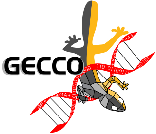
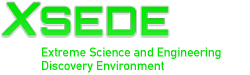

Department of Computer Science Hires Two New Faculty
March 28, 2018
The Florida Southern Department of Computer Science has hired two new faculty members for Fall 2018. Dr. Jonathan Cazalas and Dr. Matt Eicholtz will join Dr. Christian Roberson. We are excited to have them and know that both will help make the department even more successful.
On to the Great White North
March 14, 2018
After 4 years at Florida Southern, I am leaving to pursue an opportunity up north, in a part of the country where the weather is more to my liking. Thus, I am joining the faculty at the University of Wisconsin - La Crosse. My time at FSC has been very rewarding. Founding the Department of Computer Science has been a great experience. While I will miss many people at Florida Southern, I look forward to a new challenge.
Florida Southern Teams Compete in ACM Competition
November 24, 2017
The Department of Computer Science at Florida Southern sent two teams to the Southeast Regional of the ACM International Collegiate Programming Contest on November 11. Dr. Christian Roberson worked with the teams and escorted them to the contest site at Florida International University in Miami. The White team included members Kristin Martinet, Katarina Sperduto, and Quinlan Harsch. The Red team, consisting of Jess Moser, Alexander Faus, and Riley McIntyre, finished second in Division II at the FIU location. Congratulations to all of the participants.
Florida Southern CS Grad Publishes Book Chapter
November 6, 2017
A conference paper by 2017 Florida Southern Computer Science grad Vinny Ragusa and his adviser David Mathias, was invited to appear as a chapter in Intelligent Systems and Applications, a title in the Springer Studies in Computational Intelligence series. The book is expected at the end of 2017.
Kennesaw State Undergrads Give Talk at Florida Southern
October 6, 2017
Kennesaw State Computer Science majors Cindi Simmons and Kate Zelaya visited Florida Southern on October 5 to present their work as participants in the Computing Research Association CREU in 2016-17. The pair described their research on creating a block programming language for elementary school children. They also met with our own CREU team to discuss participation in the program and share experiences.
CS Students to Participate in Funded Research Project
August 15, 2017
Three Florida Southern Computer Science majors will participate this academic year in a Collaborative Research Experience for Undergradutes. Lillian Mulligan, Jess Moser and Alexander Faus will work to create an artificially intelligent controller for the ghost team in the Ms. Pac-Man game. The competitive national program is funded by the Computing Research Association.
CS major Jessie Finocchiaro wins 2017 Honor Walk
April 2, 2017
At the 2017 Founder's Day Convocation, Computer Science major Jessie Finocchiaro was named the 2017 Florida Southern College Honor Walk student. A long-standing tradition at Florida Southern, the Honor Walk recognizes the graduating senior who has distinguished himself or herself in all aspects of campus life, most significantly, academics and leadership. Jessie was selected from a strong field of 31 nominees. In my admittedly biased opinion, the committee made the only possible choice. In the Fall, Jessie will enter the doctoral program in Computer Science at the University of Colorado at Boulder, where we know she will continue to make us proud. Congratulations Jessie!
CS major Vinny Ragusa has paper accepted to GECCO
March 21, 2017

"Enhanced Genetic Path Planning for Autonomous Flight," a paper by Florida Southern CS major Vinny Ragusa, Dr. David Mathias, Vera Kazakova, and Dr. Annie Wu (the latter two authors from the University of Central Florida), has been accepted to the 2017 Genetic and Evolutionary Computation Conference (GECCO) in Berlin, Germany. GECCO is the world's top conference in evolutionary computation. Next Fall, Vinny will enter the doctoral program in Computer Science at Michigan State University where he will continue his work on evolutionary computation. Well done, Vinny! Visit the GECCO homepage here.
New CS Curriculum in Place for Fall 2017 at Florida Southern
February 21, 2017
The Department of Computer Science at Florida Southern College will introduce an all new curriculum for Fall semester 2017. Changes include 15 new courses and three concentrations. The concentrations are Web and Cloud Computing, Machine Learning and Artificial Intelligence, and Supercomputing. Each is a three course sequence providing students deep knowledge of an important area of computing. A fourth concentration, in Cybersecurty, is under development.
CS major Rick Chapman's paper appears in journal
November 19, 2016
Papers & Publications: Interdisciplinary Journal of Undergraduate Research has published an article by Senior Computer Science major Rick Chapman describing his work with Dr. David Mathias on computer vision for controlling micro aerial vehicle motion. Congratulations Rick! Read the article here.
Supercomputing comes to Florida Southern
November 15, 2016

Florida Southern College has joined the National Science Foundation XSEDE initiative which makes high performance computing resources available to colleges and universities. David Mathias and student Riley McIntyre have begun running experiments on a genetic algorithm, developed with student Vinny Ragusa, on a supercomputer at the Texas Advanced Computing Center. In Spring 2017, Dr. Mathias and several students will participate in a Parallel Computing class coordinated by XSEDE.
Computer Science Seminars
Recent and upcoming Department of Computer Science Seminars:
2017 -- 2018
September 20, 2017 -- Dan Nutting, Publix Supermarkets
October 5, 2017 -- Cindi Simmons and Kate Zelaya, Kennesaw State University
November 30, 2017 -- FSC CS Internship Experiences
2016 -- 2017
March 16, 2017 -- Alan Zukowski, Pozytek (2017 Kenneth D. Henderson Lecture in Cybersecurity)